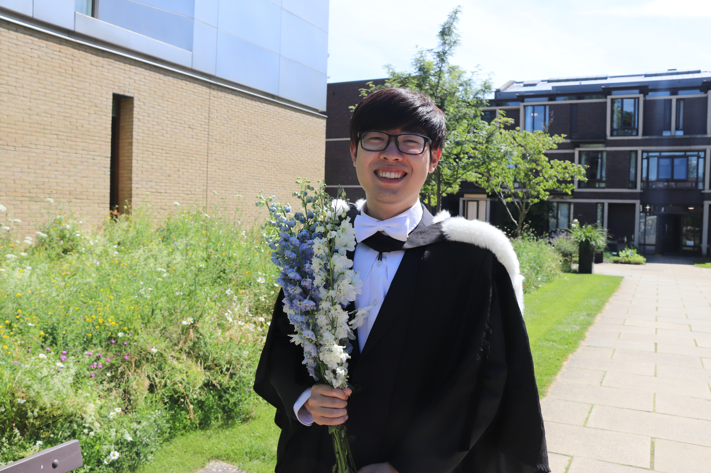
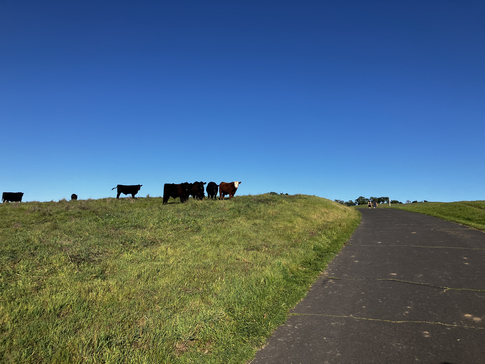

Yi Zheng
AI Researcher & Quantum Scientist · Philo Labs · Stanford · Cambridge

Education
University of California, Los Angeles
Master of Quantum Science and Technology
University of Cambridge
Bachelor of Arts with Honors in Physics
Professional Experience
Philo Labs
Apr 2026 – Jun 2026
AI Research Intern · Multimodal Post-Training & Reinforcement Learning
San Francisco, CA
- Second author of AgenticVBench (submitted to NeurIPS 2026), a 100-task agentic video post-production benchmark; originated the repair and sequencing task families and designed verifiable reward functions.
- Trained a VLM defect gate for world-model-generated robot trajectory videos on a curated 500+ clip multi-generator dataset; designed a 5-mode failure taxonomy and applied deploy-loss SFT/LoRA on Qwen3-VL-30B-A3B — improving gate F1 from 0.52 → 0.76, surpassing the Gemini 3.1 Pro frontier (0.73).
Mercor
Nov 2025 – Present
AI Training Specialist · Reinforcement Learning Data
Remote, USA
- Produced training data for two NDA-protected RL training projects; authored structured rationales and ranking decisions as reward signals for a generative AI model.
- Designed 30+ expert-level physics evaluations with reference solutions to probe frontier-LLM failure modes across quantum information, condensed matter, and circuit QED.
Research Experience
Stanford University
Nov 2025 – Apr 2026
Prof. Zhurun Ji's Group & Prof. Chao-Lin Kuo's Group · Quantum Sensing & Materials
Palo Alto, US
- Built electromagnetic simulation workflows for a cryogenic on-chip Mach–Zehnder interferometer using Ansys Electronics APIs, extracting material (t-WSe2) properties via analysis of S21 and group delay.
- Supported setup of a new dilution refrigerator — RF-line design, thermal-load estimation, component selection (VNA, AWG, circulator, filters, HEMT), and integration for microwave and mm-wave operation.
- Quantified qubit readout efficiency of a single microwave photon detector for axion detection; designed stub-filter coupling to realize a 4–5 GHz stopband for the buffer resonator using Ansys HFSS and Sonnet simulations.
University of California, Los Angeles (UCLA)
May 2025 – Sep 2025
Prof. Chee Wei Wong's Group · Superconducting Qubits
Los Angeles, CA
- Designed and simulated superconducting qubit chips — 3D transmon, 6-qubit Candle architecture, 4-qubit tunable transmon, 4-qubit coupled tunable transmon — using Qiskit Metal and Ansys HFSS for EPR/LOM analysis, with KLayout modifications.
- Executed device characterization in a BlueFors dilution fridge: resonator/qubit spectroscopy, Rabi calibrations, and relaxation/dephasing (T1, Ramsey T2*) with Zurich Instruments' LabOne Q.
- Developed a LabOne-Q measurement codebase with automated data saving/plotting and direct script-to-script output passing for multi-step experiments.
Chinese Academy of Sciences, Institute of Computing Technology
Jul 2023 – Aug 2023
Prof. Xiaoming Sun's Group · Quantum Algorithms
Beijing, China
- Researched error mitigation for Trotter decomposition and improvements via the Linear Combination of Unitaries (LCU) approach.
- Enhanced the Hamiltonian simulation module of the QuICT open-source package: first- and fourth-order Trotter decompositions and LCU-based evolution methods.
Additional Experience
Lumi Academy
Jul – Aug 2024
Oxbridge Summer Camp · Course Designer & Instructor
Shanghai, China
- Designed and delivered a two-week lecture series for 7 AS-level students on advanced mathematics, physics, and material science for Oxbridge preparation.
- One-on-one mentorship: tailored personal statement feedback and mock interviews.
Impington Village College
Jan – Mar 2024
Teaching Assistant · Year 10 GCSE Physics
Cambridge, UK
- Designed a project-based curriculum on vectors and scalars; weekly classroom support on atomic physics and radioactivity.
Jane Street
Apr 2023
INSIGHT Programme · Trading Track
London, UK
- Intensive quantitative trading training: probability, market structure, arbitrage. 1st place in the Estimathon competition.
Cambridge University Chinese Society
Mar 2022 – Mar 2023
Media Officer
Cambridge, UK
- Managed and grew the society's social media (Instagram, WeChat) through creative content and major event organisation.
Selected Projects
Specialty Pharmacy Care Plan AI System
Jun 2026
- Automated care plan generation from patient records and FDA drug labels via a LangGraph pipeline with complexity routing, schema-constrained generation, and hallucination verification; cut authoring time from 20–40 min to under 2 min.
- Built a RAG knowledge base over the FDA SPL corpus (1,842 archives, 91K chunks) with Pydantic validation, LLM-as-judge auditing, and repair retries; achieved 98.4% F1 and 11.2% token reduction.
Semiconductor Processing & Microscopy Characterization
Apr – Jun 2025
- Fabricated microstructures on silicon wafers via photolithography and wet etching.
- Characterized using SEM, FIB, and TEM; lamella lift-outs to reveal transistor features on an Intel Pentium 4 chip.
Quantum NMR Lab
Jan – Mar 2025
- Quantum NMR on Magritek SpinSolve: π/2 calibration, FID/Spin Echo/CPMG sequences.
- Executed two-qubit gates on 13CHCl3 — Hadamard, CNOT, Deutsch–Jozsa algorithm.
Classical Quantum Circuit Simulator
Dec 2024
- Python QASM simulator using state-vector amplitudes, avoiding full matrix computation for large circuits.
- Benchmarked 15 industry-standard circuits; extracted linear correlations between complexity and runtime.
Quantum Optics Lab
Sep – Dec 2024
- Built Michelson/Mach–Zehnder interferometers; measured cavity finesse ≈16 and observed TEM modes.
- Generated SPDC photon pairs at ~3.8×103 coincidences/s; CHSH Bell-inequality tests.
Lenia – Cellular Automata
Apr 2024
- Implemented Lenia and Particle Lenia for complex biological behavior simulation.
- 40% speedup across 3000 frames using JAX and FFT-based convolution.
Ising Model Simulation
Mar 2023
- Simulated N×N spin lattice with Metropolis–Hastings / Monte Carlo via NumPy boolean masking.
- Investigated thermodynamic properties near the phase transition.
Skills
AI / ML
Libraries & Infra
Quantum & Simulation
Lab Skills
Log
Mar 13, 2026
Took a walk today and stumbled upon a crowd of cows. Naturally, I asked if any of them had thoughts on my current research puzzle. Radio silence. We held eye contact for a solid minute, reached some kind of mutual understanding, and went back to our respective business.
